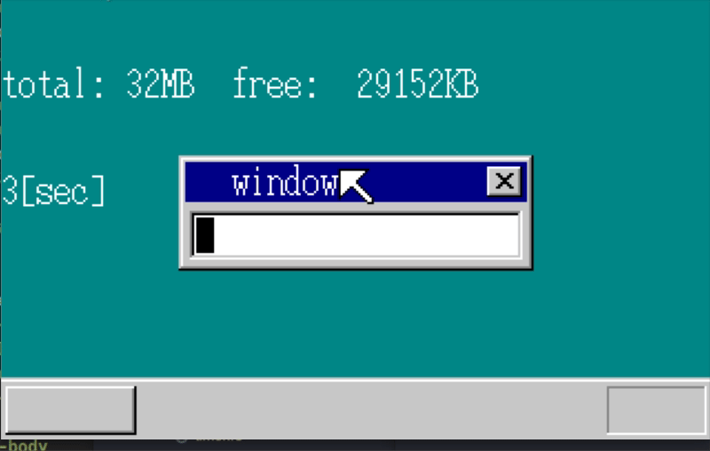
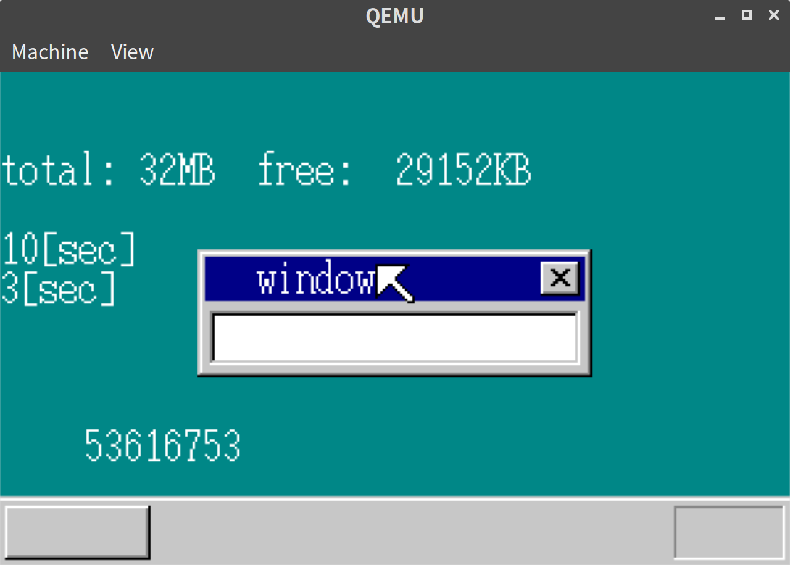

「30日でできる！OS自作入門」をRustで。15日目
「30日でできる！OS自作入門 」のC言語の部分をできるだけRustですすめてみる。今回は15日目の内容。
タスクのスイッチをする
マルチタスクを目指して、まずは2つのタスクの切り替えを目指す。
そのために、まずはタスクの状態保持用のTSSを定義する。
// mt.rs
#[derive(Debug, Default)]
#[repr(C, packed)]
pub struct TSS {
pub backlink: i32,
pub esp0: i32,
pub ss0: i32,
pub esp1: i32,
pub ss1: i32,
pub esp2: i32,
pub ss2: i32,
pub cr3: i32,
pub eip: i32,
pub eflags: i32,
pub eax: i32,
pub ecx: i32,
pub edx: i32,
pub ebx: i32,
pub esp: i32,
pub ebp: i32,
pub esi: i32,
pub edi: i32,
pub es: i32,
pub cs: i32,
pub ss: i32,
pub ds: i32,
pub fs: i32,
pub gs: i32,
pub ldtr: i32,
pub iomap: i32,
}このTSSを使って、二つのタスクを定義していく。
// lib.rs
// haribote_is() に追加
let mut tss_a: TSS = Default::default();
tss_a.ldtr = 0;
tss_a.iomap = 0x40000000;
let mut tss_b: TSS = Default::default();
tss_b.ldtr = 0;
tss_b.iomap = 0x40000000;
// GDTの3番目と4番目に登録
let gdt = unsafe { &mut *((ADR_GDT + 3 * 8) as *mut SegmentDescriptor) };
*gdt = SegmentDescriptor::new(103, &tss_a as *const TSS as i32, AR_TSS32);
let gdt = unsafe { &mut *((ADR_GDT + 4 * 8) as *mut SegmentDescriptor) };
*gdt = SegmentDescriptor::new(103, &tss_b as *const TSS as i32, AR_TSS32);
load_tr(3 * 8);
let task_b_esp = memman.alloc_4k(64 * 1024).unwrap() + 64 * 1024;
tss_b.eip = task_b_main as i32;
tss_b.eflags = 0x00000202; /* IF = 1; */
tss_b.eax = 0;
tss_b.ecx = 0;
tss_b.edx = 0;
tss_b.ebx = 0;
tss_b.esp = task_b_esp as i32;
tss_b.ebp = 0;
tss_b.esi = 0;
tss_b.edi = 0;
tss_b.es = 1 * 8;
tss_b.cs = 2 * 8;
tss_b.ss = 1 * 8;
tss_b.ds = 1 * 8;
tss_b.fs = 1 * 8;
tss_b.gs = 1 * 8;また、10秒たったらタスクスイッチするように設定する。
// lib.rs
} else if i == 10 {
write_with_bg!(
sheet_manager,
shi_bg,
buf_bg_addr,
*SCREEN_WIDTH as isize,
*SCREEN_HEIGHT as isize,
0,
64,
Color::White,
Color::DarkCyan,
7,
"10[sec]"
);
taskswitch(4 * 8); // <- 追加
} else if i == 3 {boot_b_main は5秒経過で元のタスクに戻るように定義する。
// lib.rs
pub extern "C" fn task_b_main() {
use asm::{cli, hlt, sti, taskswitch};
use fifo::Fifo;
use timer::TIMER_MANAGER;
let fifo = Fifo::new(128);
let fifo_addr = &fifo as *const Fifo as usize;
let timer_indexB = TIMER_MANAGER.lock().alloc().unwrap();
TIMER_MANAGER.lock().init_timer(timer_indexB, fifo_addr, 1);
TIMER_MANAGER.lock().set_time(timer_indexB, 500);
loop {
cli();
if fifo.status() == 0 {
sti();
hlt();
} else {
let i = fifo.get().unwrap();
sti();
if i == 1 {
// 5秒たったらharibote_os()に戻る
taskswitch(3 * 8);
}
}
}
}fifoについてはlazy_staticでグローバルに定義していたが、それぞれのタスクごとに生成するような方式に変えた。
最後にアセンブリ言語まわりの実装を追加する。
// asm.rs
pub fn load_tr(adr: i32) {
unsafe {
asm!("LTR [$0]" :: "r"(&adr) : "memory" : "intel");
}
}
#[naked]
pub fn taskswitch(adr: i32) {
unsafe {
asm!("JMP $0,0" :: "i"(adr) :: "intel");
}
}JMP する時は何となくおかしくなりそうな気がするので naked にしている。
実行結果
以下の通り、10sec表示で一旦カーソルの点滅がとまり、5秒後に再度復活したことがわかる。

write_with_bgマクロの改良
write_with_bgマクロにsheetのindexとデータを保持するbufのアドレス両方わたしていたが、bufのアドレスはsheet自体が持っているため、わざわざ渡さなくてもよいことに気づいた。
#[macro_export]
macro_rules! write_with_bg {
($sheet_manager: expr, $sheet_addr: expr, $width: expr, $height: expr, $x: expr, $y: expr, $fg: expr, $bg: expr, $length: expr, $($arg: tt)* ) => {{
let buf_addr = $sheet_manager.get_buf_addr($sheet_addr); // buf_addrをひいてくる
boxfill(buf_addr, $width as isize, $bg, $x as isize, $y as isize, $x as isize + 8 * $length as isize - 1, $y as isize + 15);
let mut writer = ScreenWriter::new(
Some(buf_addr),
$fg,
$x as usize,
$y as usize,
$width as usize,
$height as usize);
use core::fmt::Write;
write!(writer, $($arg)*).unwrap();
$sheet_manager.refresh($sheet_addr, $x as i32, $y as i32, $x as i32 + $length as i32 * 8, $y as i32 + 16);
}}
}これで引数が一個減って少し楽になった。
タスクを高速に切り替える
マルチタスクを実現するためには意識しないくらい高速にタスクを切り替える必要がある。
0.02秒ごとに切り替わるようにする。
ちゃんと動いていることを検証するため、ちょっと汚いが、static mut経由でsheetの情報を渡しつつ、task_b_mainでも画面に表示ができるようにする。
// lib.rs
static mut SHEET_BG_ADDR: usize = 0;
static mut SHEET_MANAGER_ADDR: usize = 0;
#[no_mangle]
#[start]
pub extern "C" fn haribote_os() {
// 必要な部分だけ書き出す
let timer_index_ts = TIMER_MANAGER.lock().alloc().unwrap();
TIMER_MANAGER
.lock()
.init_timer(timer_index_ts, fifo_addr, 2);
TIMER_MANAGER.lock().set_time(timer_index_ts, 2);
unsafe {
SHEET_MANAGER_ADDR = sheet_manager_addr as usize;
SHEET_BG_ADDR = shi_bg;
}
loop {
// ...
if i == 2 {
farjmp(0, 4 * 8);
TIMER_MANAGER.lock().set_time(timer_index_ts, 2);
}
}
}farjmp は前述のswitchtaskを少し書き換えたものとなる。
task_b_main は以下のようになる。
// lib.rs
pub extern "C" fn task_b_main() {
use asm::{cli, farjmp, hlt, sti};
use fifo::Fifo;
use sheet::SheetManager;
use timer::TIMER_MANAGER;
use vga::{Color, SCREEN_HEIGHT, SCREEN_WIDTH};
let fifo = Fifo::new(128);
let fifo_addr = &fifo as *const Fifo as usize;
let shi_bg = unsafe { SHEET_BG_ADDR };
let sheet_manager_addr = unsafe { SHEET_MANAGER_ADDR };
let sheet_manager = unsafe { &mut *(sheet_manager_addr as *mut SheetManager) };
let timer_index_ts = TIMER_MANAGER.lock().alloc().unwrap();
TIMER_MANAGER
.lock()
.init_timer(timer_index_ts, fifo_addr, 2);
TIMER_MANAGER.lock().set_time(timer_index_ts, 2);
let timer_index_sp = TIMER_MANAGER.lock().alloc().unwrap();
TIMER_MANAGER
.lock()
.init_timer(timer_index_sp, fifo_addr, 8);
TIMER_MANAGER.lock().set_time(timer_index_sp, 800);
let mut count = 0;
loop {
count += 1;
cli();
if fifo.status() == 0 {
sti();
} else {
let i = fifo.get().unwrap();
sti();
if i == 2 {
farjmp(0, 3 * 8);
TIMER_MANAGER.lock().set_time(timer_index_ts, 2);
} else if i == 8 {
write_with_bg!(
sheet_manager,
shi_bg,
*SCREEN_WIDTH as isize,
*SCREEN_HEIGHT as isize,
10,
144,
Color::White,
Color::DarkCyan,
11,
"{:>11}",
count
);
}
}
}
}実行結果
実行してみると、以下のとおり、メインのharibote_osの表示もtask_b_mainの表示もされたことがわかる。
また、カーソルの点滅も見たところ特に違和感なく点滅していた。

暗黙的にタスクのスイッチをする。
これまではharibote_os()やtask_b_main()で明示的に切り替えを行っていたが、暗黙的にタスクのスイッチができるようにする。 tss.rsをmt.rsに名前を変え、こちらに暗黙的な切り替え用の処理を書いていく。
// lib.rs
use crate::timer::TIMER_MANAGER;
pub static mut MT_TIMER_INDEX: usize = 0;
pub static mut MT_TR: i32 = 3 * 8;
pub fn mt_init() {
let timer_index_ts = TIMER_MANAGER.lock().alloc().unwrap();
TIMER_MANAGER.lock().set_time(timer_index_ts, 2);
unsafe {
MT_TIMER_INDEX = timer_index_ts;
}
}
pub fn mt_taskswitch() {
if unsafe { MT_TR } == 3 * 8 {
unsafe {
MT_TR = 4 * 8;
}
TIMER_MANAGER.lock().set_time(unsafe { MT_TIMER_INDEX }, 2);
crate::asm::farjmp(0, 4 * 8);
} else {
unsafe {
MT_TR = 3 * 8;
}
TIMER_MANAGER.lock().set_time(unsafe { MT_TIMER_INDEX }, 2);
crate::asm::farjmp(0, 3 * 8);
}
}timer.rsのinthandler20にタスクスイッチ用の分岐をいれる。
pub static mut NEED_SWITCH: bool = false;
pub extern "C" fn inthandler20() {
out8(PIC0_OCW2, 0x60); // IRQ-00受付完了をPICに通知
let mut tm = TIMER_MANAGER.lock();
tm.count += 1;
if tm.next_tick > tm.count {
return;
}
let mut timer_index = tm.t0;
let mut need_taskswitch = false;
loop {
let t_index = timer_index.unwrap();
if tm.timers_data[t_index].timeout > tm.count {
break;
}
let mut timer = &mut tm.timers_data[t_index];
timer.flag = TimerFlag::USED;
if t_index != unsafe { crate::mt::MT_TIMER_INDEX } {
let fifo = unsafe { &mut *(timer.fifo_addr as *mut Fifo) };
fifo.put(timer.data as u32).unwrap();
} else {
need_taskswitch = true;
}
timer_index = timer.next;
}
tm.t0 = timer_index;
if let Some(t_index) = timer_index {
tm.next_tick = tm.timers_data[t_index].timeout;
}
if need_taskswitch {
unsafe { NEED_SWITCH = true };
}
}本の通り、このinthandler20の中でタスクスイッチができるといいのだが、うまく動かず、asm.rsの呼出側で調整するようにした。
この辺り原因がわからないので、そのうち調査したい。
//asm.rs
#[macro_export]
macro_rules! handler {
($name: ident) => {{
#[naked]
pub extern "C" fn wrapper() {
use crate::timer::NEED_SWITCH;
use crate::mt::mt_taskswitch;
unsafe {
asm!("PUSH ES
PUSH DS
PUSHAD
MOV EAX,ESP
PUSH EAX
MOV AX,SS
MOV DS,AX
MOV ES,AX" : : : : "intel", "volatile");
asm!("CALL $0" : : "r"($name as extern "C" fn()) : : "intel");
if NEED_SWITCH { // タスクスイッチの分岐を追加
NEED_SWITCH = false;
mt_taskswitch();
}
asm!("POP EAX
POPAD
POP DS
POP ES
IRETD" : : : : "intel", "volatile");
}
}
wrapper
}}
}これで、lib.rs上のタスクスイッチ関係のコードを削除しても動くようになった。
画面上は上の結果と変わらないので省く。
15日目は以上となる。ここまでの内容のコードはyoshitsugu/hariboteos_in_rustのday15としてタグを打ってある。